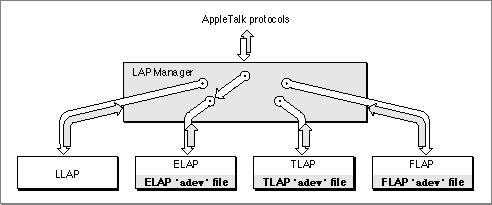

Legacy Document
Important: The information in this document is obsolete and should not be used for new development.
Important: The information in this document is obsolete and should not be used for new development.


About the LAP Manager
A Macintosh computer on an AppleTalk network can include one or more AppleTalk connection files. An AppleTalk connection file is a file of type'adev'that contains a link-access protocol implementation for a data link (ELAP for EtherTalk, for example). One important function of an AppleTalk connection file is to implement the AppleTalk Address Resolution Protocol (AARP) that maps hardware layer addresses to AppleTalk node addresses. The LAP Manager makes it possible for the user to select among AppleTalk connection files by using the Network control panel to specify which network is to be used for the node's AppleTalk connection. When the user selects a connection from the Network control panel, the LAP Manager routes AppleTalk communications through the selected link-access protocol and hence through the selected hardware. The LAP Manager acts as a switching mechanism, interceding between the higher-level AppleTalk protocols and the data links so that when a user selects or changes the type of data link to be used, the process is transparent to the higher-level AppleTalk protocols and has no effect on applications that are clients of these protocols. Figure 10-1 shows this service that the LAP Manager provides. This figure does not show an AppleTalk connection file for LLAP because AARP is not used for LLAP and address mapping is not necessary.Figure 10-1 LAP Manager connecting the higher-level AppleTalk protocols with the
selected data link
In addition to providing an interface to AppleTalk connection files, the LAP Manager also maintains the AppleTalk Transition Queue, which is an operating-system queue that can notify your application each time an AppleTalk transition occurs. An AppleTalk transition is an event, such as an AppleTalk driver being opened or closed or a network connection being broken, that can affect your AppleTalk application.
At any given time there might be two or more applications running that use AppleTalk. If one of these applications opens the .MPP driver, the other AppleTalk applications that use the driver are affected. If the operating system closes the AppleTalk .MPP driver, all AppleTalk applications using the driver are affected. To ensure that your application
is not adversely affected by such an event, your application can place an entry in the AppleTalk Transition Queue. The LAP Manager sends a message to each entry each time the operating system or any routine performs any of these operations:
Each of these events is referred to as an AppleTalk transition.
- opens the .MPP driver
- closes the .MPP driver
- indicates that it intends to close the .MPP driver
- cancels its intention to close the .MPP driver
- reports that it is changing the flagship name (This is a personalized name that a user can enter to identify the system when it is connected to an AppleTalk network.)
- indicates that it intends to change the flagship name
- cancels its intention to change the flagship name
- reports that the network connectivity has changed (for example, that a previously interconnected network is no longer available)
- reports that the cable range for the current network has been changed
- changes the speed of the CPU
- defines its own AppleTalk event and calls the AppleTalk Transition Queue to inform it that such an event occurred
The LAP Manager also includes a protocol handler that reads 802.2 packets and provides an interface that allows you to attach your own protocol handler to receive 802.2 Type 1 packets. An 802.2 protocol handler is an application or process that receives, reads, and processes these 802.2 data packets. An 802.2 packet conforms to the 802.2 data-link standard called Logical Link Control (LLC) defined by the Institute of Electrical and Electronics Engineers (IEEE) for use on Ethernet, token ring, FDDI, and certain other data links. The 802.2 Type 1 protocol specifies a connectionless or datagram service. (The AppleTalk ELAP, TLAP, and FLAP implementations process 802.2 Type 1 packets.)